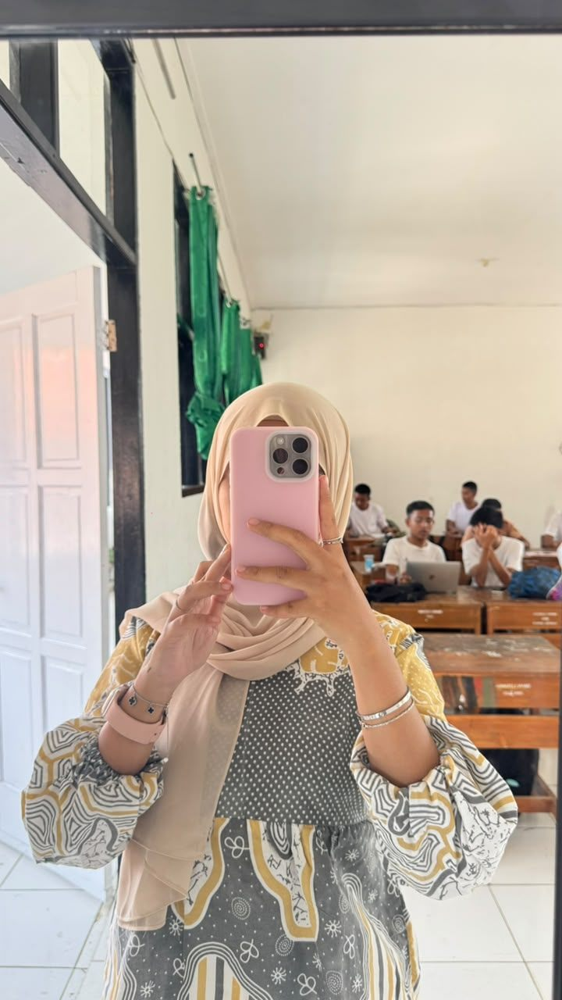

1
Memahami kebutuhan peserta didik
Melakukan asesmen dan observasi sebelum merancang layanan, agar bantuan yang diberikan sesuai dengan kebutuhan mereka, bukan dengan dugaan saya.
Beranda / Modul Akademik PPG / Seminar PPG
Halaman ini merangkum perjalanan belajar saya selama dua semester PPG dan memuat refleksi akhir saya (LK 3). Uraian tiap mata kuliah dan karya inovasi ada di halamannya masing-masing.
Bagian pertama
Satu perubahan pada diri saya dari setiap mata kuliah: inti bahan refleksinya, lalu cara bahan itu hidup di Ular Tangga Motivasi, karya inovasi saya. Uraian 4C lengkapnya ada di halaman tiap mata kuliah.
Inti bahan Filosofi Pendidikan: menuntun murid sesuai kodratnya (Ki Hadjar Dewantara), sehingga setiap interaksi menjadi kesempatan menanamkan nilai.
Di Ular Tangga Motivasi: kartunya berupa pertanyaan terbuka tanpa jawaban benar atau salah, sehingga murid menemukan jawabannya sendiri.
Lembar kerja: LK 3.5 Filosofi Pendidikan, tabel “I Used to Think... Now I Think...”
Inti bahan Asesmen dan Layanan BK: kebutuhan murid dibaca dari asesmen, bukan dari dugaan. Di kelas XI-J, bidang belajar menempati proporsi AKPD tertinggi (31,65%).
Di Ular Tangga Motivasi: temuan itu menjadi salah satu alasan permainannya berfokus pada kebiasaan belajar, dan jawaban murid dicatat tanpa nama sebagai data layanan berikutnya.
Lembar kerja: Laporan Hasil AKPD Kelas XI-J SMA Negeri 1 Cisarua
Inti bahan PPL Terbimbing: keterlibatan murid ditentukan oleh pertanyaan yang diajukan, bukan oleh ragam media.
Di Ular Tangga Motivasi: giliran berbicara ditentukan oleh dadu, bukan oleh tunjukan guru, dan murid saling menanggapi jawaban temannya.
Lembar kerja: LK 4 PPL Terbimbing, Refleksi Praktik Pembelajaran Terbimbing ke-3
Inti bahan Pola Pikir Bertumbuh: kemampuan dapat tumbuh, dan bahasa guru menentukan apakah murid berani mencoba lagi.
Di Ular Tangga Motivasi: kotak ular tidak berhenti pada hukuman; kartunya menanyakan penyebab sebuah kebiasaan dan cara mengatasinya.
Lembar kerja: LK 4.2 Pola Pikir Bertumbuh, “Mengubah Responmu untuk Kelas Bertumbuh”
Inti bahan Design Thinking: berempati dan memahami pengguna sebelum merancang, lalu menguji prototipe dan memperbaikinya.
Di Ular Tangga Motivasi: permainan ini diperlakukan sebagai karya yang dipakai lebih dahulu lalu diperbaiki dari hasil pengukuran, bukan karya yang langsung dianggap jadi.
Lembar kerja: Laporan Komprehensif UTS Design Thinking, studi kasus peserta didik DB
Inti bahan Praktikum Konseling Individu: kehadiran dan empati konselor membuat konseli merasa aman untuk menemukan langkahnya sendiri.
Di Ular Tangga Motivasi: setiap pemain boleh melewati pertanyaan, dan kartu ular membahas kebiasaan secara umum sehingga pemain tidak diminta mengaku.
Lembar kerja: LK 5.1 Refleksi Akhir Praktikum Konseling Individu
Inti bahan Intervensi Guru dalam Penelitian Universal: pelanggaran aturan dibaca sebagai tanda kebutuhan yang perlu dipahami sebelum ditegur.
Di Ular Tangga Motivasi: kartu ular menanyakan penyebab di balik kebiasaan yang menghambat, bukan menegur pemainnya.
Lembar kerja: LK 1.E Intervensi Guru, Refleksi Individual Topik 1
Inti bahan Pembelajaran Sosial Emosional: kompetensi sosial emosional perlu dilatih guru sendiri sebelum diajarkan kepada murid.
Di Ular Tangga Motivasi: sebagian besar pertanyaannya menyentuh perasaan dan motivasi, bukan hanya cara belajar.
Lembar kerja: LK 1.C Pembelajaran Sosial Emosional, Studi Kasus Terpadu
Inti bahan PPL Mandiri: apersepsi yang dekat dengan keseharian murid, pembagian peran, dan waktu yang terukur menjaga semua murid tetap terlibat.
Di Ular Tangga Motivasi: permainan menempati inti layanan dengan penguatan berkala, dan aturan harus tepat di kotak 48 membuat lebih banyak pertanyaan sempat dibahas.
Lembar kerja: LK 4 PPL Mandiri, Refleksi Praktik Pembelajaran Mandiri ke-3
Inti bahan Praktikum Konseling Kelompok: pemimpin kelompok aktif menjaga rasa aman bersama melalui kesepakatan yang disusun dengan anggota.
Di Ular Tangga Motivasi: permainan dibuka dengan kesepakatan bahwa tidak ada jawaban yang dinilai benar atau salah, dan jawaban dicatat tanpa nama.
Lembar kerja: LK 2.C Konseling Kelompok, Diskusi Penyelesaian Kasus Anita dan Erika
Inti bahan Projek Kepemimpinan: program berangkat dari kebutuhan murid (Why, How, What), dipetakan dengan peta pikiran, dan dijalankan bersama orang lain.
Di Ular Tangga Motivasi: media harus tetap dapat dipakai tanpa kehadiran saya, karena itu versi satu perangkat dapat dibuka Guru BK dari peramban mana pun.
Lembar kerja: LK 5.1 Projek Kepemimpinan, Peta Pikiran

Kesebelas temuan di atas bertemu di satu karya inovasi.
Perubahan-perubahan itu bermuara pada Ular Tangga Motivasi, permainan papan digital berisi 46 kartu pertanyaan refleksi tentang motivasi belajar, yang sudah dimainkan dalam layanan bimbingan klasikal bersama satu kelas XI pada 1 Agustus 2026. Giliran berbicara ditentukan oleh dadu, bukan oleh tunjukan guru, dan jawaban murid menjadi bahan asesmen untuk layanan berikutnya. Rancangan dan instrumen pengukurannya diuraikan di halaman Karya Inovasi.
Buka halaman Karya InovasiBagian kedua, LK 3
Tiga pertanyaan refleksi akhir PPG: bagaimana pandangan saya tentang pendidikan di Indonesia, apa upaya saya untuk menjadi guru profesional, dan tiga hal yang akan saya lakukan ketika memulai karier sebagai guru BK.
Setelah mengikuti PPG, saya menyadari bahwa pendidikan di Indonesia seharusnya tidak hanya berfokus pada pencapaian akademik, tetapi juga pada perkembangan karakter, potensi, dan kesejahteraan peserta didik. Setiap murid memiliki kebutuhan dan latar belakang yang berbeda, sehingga pendidikan perlu dilaksanakan secara inklusif, berpihak pada murid, dan sesuai dengan kebutuhannya.
Pandangan ini tidak hanya saya peroleh dari teori. Pemikiran Ki Hadjar Dewantara tentang menuntun sesuai kodrat menjadi dasarnya, tetapi baru terasa nyata ketika hasil AKPD kelas XI-J menunjukkan bahwa kebutuhan murid tidak selalu sama dengan dugaan saya, dan ketika selama PPL Mandiri saya melihat bahwa layanan BK sebaik apa pun tetap bergantung pada sistem sekolah yang menopangnya. Karena itu, menurut saya, pengembangan pendidikan perlu bergerak dari dua arah: guru yang membaca kebutuhan murid sebelum bertindak, dan sekolah yang memberi ruang bagi layanan itu untuk berjalan.
Untuk menjadi guru profesional, saya akan terus meningkatkan kompetensi, memahami kebutuhan murid melalui asesmen, merancang layanan BK berdasarkan data, serta melakukan evaluasi dan refleksi secara berkala. Saya juga perlu menjaga etika profesi, mengelola emosi, terbuka terhadap masukan, dan menjadi teladan bagi peserta didik.
Sebagian langkah itu sudah saya mulai di PPL Mandiri. Setiap RPL saya lengkapi evaluasi proses sebelum evaluasi hasil, Aturan Kelas Saling Menghargai saya rumuskan bersama murid, dan setiap kendala di kelas saya catat sebagai bahan perbaikan layanan berikutnya.
Tiga hal penting yang akan saya lakukan ketika memulai karier sebagai guru BK:
1
Melakukan asesmen dan observasi sebelum merancang layanan, agar bantuan yang diberikan sesuai dengan kebutuhan mereka, bukan dengan dugaan saya.
2
Menggunakan metode dan media yang menarik, membangun komunikasi yang terbuka, serta menjaga suasana yang aman dan tidak menghakimi dari awal sampai akhir layanan.
3
Menilai keterlaksanaan dan hasil layanan, meminta masukan dari rekan sejawat, serta mengikuti kegiatan pengembangan profesional untuk memperbaiki kualitas layanan BK.
Melalui langkah tersebut, saya ingin menjadi guru BK yang tidak hanya mampu merancang program, tetapi juga konsisten melaksanakannya dan memastikan manfaatnya bagi peserta didik.
Penutup
Jika seluruh refleksi ini diringkas menjadi satu kalimat, perubahannya terletak pada pertanyaan yang saya ajukan di awal pekerjaan. Sebelumnya pertanyaan saya adalah program apa yang ingin saya buat; kini pertanyaannya adalah kebutuhan siapa yang sedang saya jawab.
Dua semester ini mengajarkan saya bahwa menjadi guru profesional adalah proses yang terus berjalan. Rancangan layanan saya kini lebih matang, dan tantangan berikutnya adalah menuntaskan setiap rancangan sampai benar-benar terlaksana dan terukur dampaknya bagi murid. Karena itu saya akan menilai rancangan dari kemungkinannya untuk dilaksanakan, menuntaskan apa yang sudah saya mulai, dan terus belajar dari umpan balik murid, rekan sejawat, serta Guru BK.
Lanjutkan membaca
Ada empat halaman lanjutan. Silakan pilih mana yang hendak dibaca lebih dahulu.
Refleksi Semester I Refleksi Semester II Karya Inovasi Praktik di PPL Mandiri